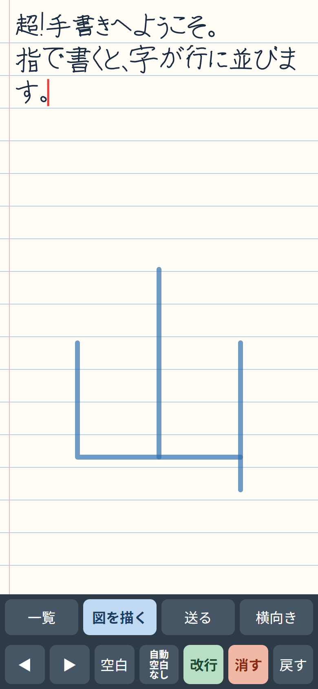
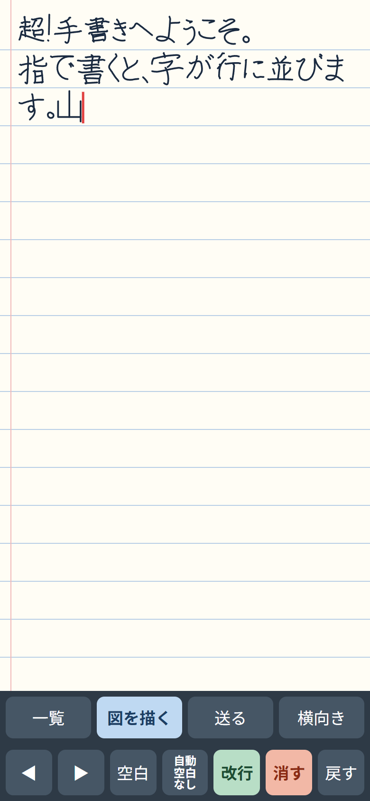
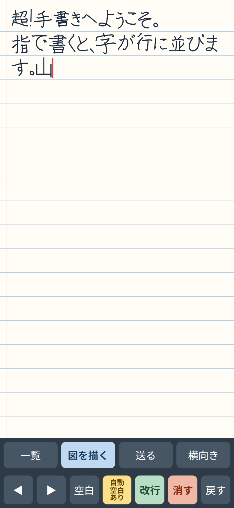
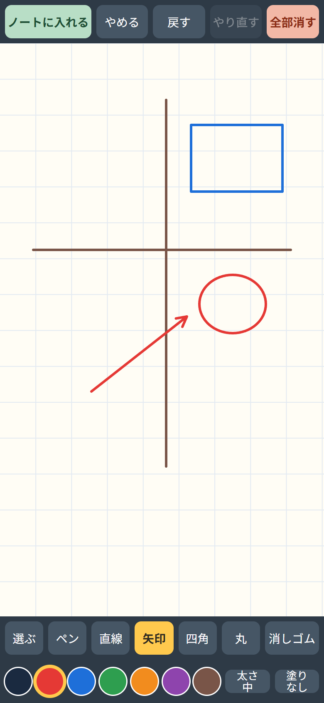
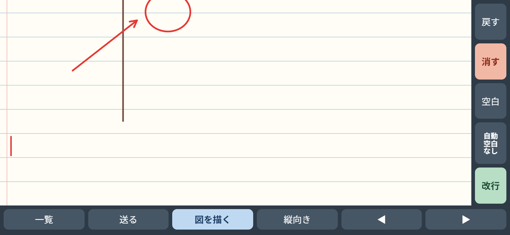
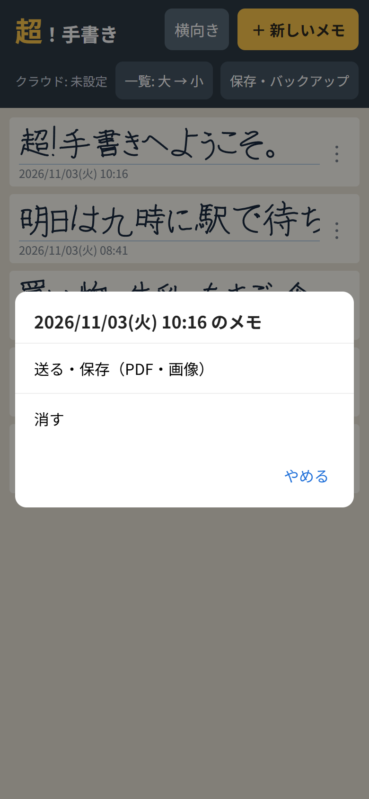
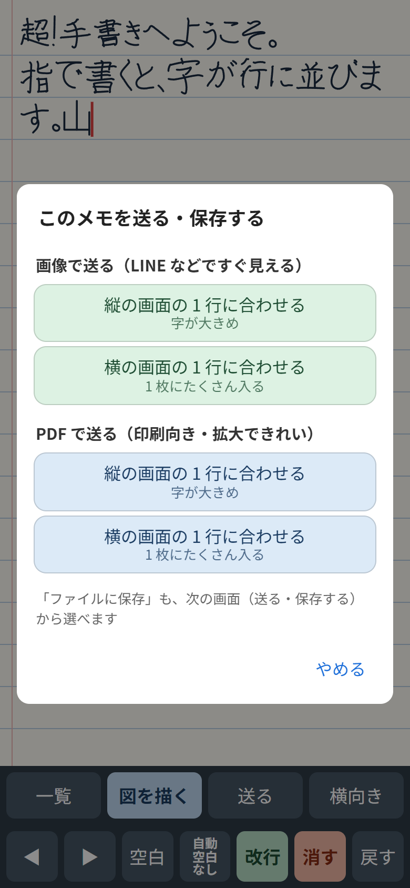
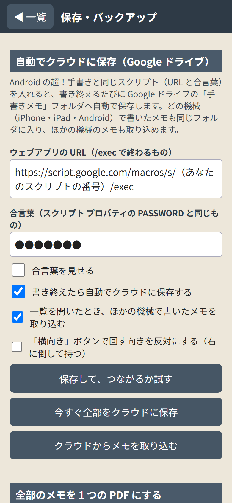

超！手書き Web 版 使い方マニュアル
（アプリの版: Web 版 v10 2026-11-03 作成）
超！手書き Web 版は、iPhone や iPad の画面に指（または Apple Pencil）で字を書くと、ノートの行にきれいに並べてくれる手書きメモです。
Android 版の「超！手書き」と同じ使い方で、Google ドライブの同じフォルダにメモを保存できます。
- アプリのお店（App Store）から入れるものではなく、Safari で開いて「ホーム画面に追加」して使います。
- 写真は iPhone の大きさの画面です。iPad でも同じボタンが並びます。
- 写真の中のメモは、説明のために作った見本です。
まず「1. ホーム画面に追加する」と「2. 書いてみる」だけ読めば、すぐに使えます。
もくじ
- ホーム画面に追加する
- 書いてみる
- 書く画面のボタン
- 自動空白（字のあとに自動ですき間を入れる）
- 図を描く
- 横向きで使う
- 一覧の画面の使い方
- メモを送る・保存する（画像・PDF）
- 自動でクラウド（Google ドライブ）に保存する
- 大切な注意（メモが消えないように）
- 困ったときは
- 言葉の説明
1. ホーム画面に追加する
- iPhone（iPad）の Safari で、次の住所を開きます。
https://chocorin0000.github.io/chou-tegaki/
- 画面の下（iPad は上）の共有のマーク（四角から上向きの矢印が出ている絵）を押します。
- 下へなぞって「ホーム画面に追加」を押します。
- 名前が「超！手書き」になっていることを確かめて、右上の「追加」を押します。
- ホーム画面に、右下に赤い「web」の札がついたアイコンが出れば完了です。
- 次からは、ホーム画面のアイコンから開いてください。 Safari のまま使うと、画面の上下にアドレスの欄が出て、書く場所がせまくなります。
- 一度開けば、電波がないところでも使えます。
- 新しい版が出たときは、アイコンから開き直すと自動で新しくなります。入れ直す必要はありません。
Android のスマホでも、Chrome で同じ住所を開き「︙」→「ホーム画面に追加」で使えます。ただ、Android には Android 版（アプリ）があるので、そちらがおすすめです。
2. 書いてみる
一覧の画面の右上「＋ 新しいメモ」を押すと、ノートの画面になります。

① 画面のどこにでも、大きく書く（ここでは「山」）

② 指を離すと、小さくなって行に入る
- 画面のどこに書いても大丈夫です。 1 文字、または数文字まとめて書いて指を離すと、0.7 秒ほどで字が小さくなり、赤い線（カーソル）のところに並びます。
- 大きくゆっくり書くほど、きれいに並びます。
- 2 本指でなぞると、ノートが上下に動きます。
- 何も書きかけていないときに軽くトンとタップすると、そこにカーソルが動きます（あとから間に書き足せます）。
- Apple Pencil で書くと、そのあとは指 1 本でノートが動くようになります（手のひらが画面に当たっても書かれません）。
- 書いたものは自動で保存されます。保存ボタンはありません。
- 行の右はしまで来ると、自動で次の行に送られます。
3. 書く画面のボタン
上の段:
| ボタン |
すること |
| 一覧 |
一覧の画面に戻る（メモは自動で保存されています） |
| 図を描く |
図（線・矢印・四角・丸など）を描いて、ノートに入れる（「5.」） |
| 送る |
画像や PDF にして送る・保存する（「8.」） |
| 横向き |
画面を 90 度回して、横長で使う（「6.」） |
下の段:
| ボタン |
すること |
| ◀ ▶ |
カーソルを 1 文字ずつ左・右に動かす |
| 空白 |
すき間（1 文字分の空き）を入れる |
| 自動空白 なし／あり |
字のあとに自動ですき間を入れるかどうか（「4.」） |
| 改行 |
次の行へ（うすい緑のボタン） |
| 消す |
カーソルのすぐ前の 1 文字を消す（うすい赤のボタン） |
| 戻す |
1 つ前の状態に戻す（まちがえて消したときも、これで戻せます） |
4. 自動空白（字のあとに自動ですき間を入れる）
「自動空白 なし」（灰色）

押すと「自動空白 あり」（黄色）
- 「自動空白」のボタンを押すたびに、「なし」と「あり」が入れ替わります。
- 「あり」にすると、字を書いて指を離し、2.3 秒なにも書かないと、空白（すき間）を 1 つ自動で入れます。
単語ごとに少し間をあけて書くと、読みやすいメモになります。
- 続けて書いているあいだは、空白は入りません。
- 入った空白がいらないときは「消す」で消せます。
5. 図を描く
地図や簡単な絵を、ノートの中に入れられます。

線・四角・丸・矢印で描いた地図
- 書く画面の「図を描く」を押します。
- そのメモにまだ図がなければ、すぐに図を描く画面になります。
- もう図があるときは、「＋ 新しい図を描く」か、前に描いた図の「直す」「消す」を選びます。
- 下の段で道具と色を選んで描きます。
- 描き終えたら、左上の「ノートに入れる」を押します。図はカーソルの場所に入ります。
道具（下の 1 段目）
| ボタン |
すること |
| 選ぶ |
描いた形を選んで、動かす・大きさを変える・消す（下の「形を選ぶ」） |
| ペン |
指でなぞったとおりに描く |
| 直線 |
始めと終わりを結ぶまっすぐな線 |
| 矢印 |
終わりに矢じりのついた線 |
| 四角 |
なぞった範囲の四角 |
| 丸 |
なぞった範囲の丸（だ円） |
| 消しゴム |
指でなぞったところを通る線や形を、ひとまとまりごと消す |
色・太さ・塗り（下の 2 段目）
- 左の丸い色（黒・赤・青・緑・オレンジ・むらさき・茶色）から、描く色を選びます。
- 「太さ」を押すたびに、細 → 中 → 太 → 極太 と変わります。
- 「塗り」を押すたびに、なし → うすく → ぬる と変わります。四角や丸の中を、線と同じ色で塗ります（「うすく」は透けた色）。
- 形を選んでいるときに色・太さ・塗りを押すと、選んだ形が変わります。
上のボタン
| ボタン |
すること |
| ノートに入れる |
図をノートに入れて、書く画面に戻る |
| やめる |
描いたものを入れずに、書く画面に戻る |
| 戻す・やり直す |
1 つ前に戻す／戻したのをやり直す |
| 全部消す |
図の中のものを全部消す |
形を選ぶ（動かす・大きさを変える・消す）
- 「選ぶ」を押してから形をタップすると、青い点線の枠が出ます。
- 枠の中をなぞると動きます。
- 四すみの青い丸をなぞると大きさが変わります（直線と矢印は、両はしの丸）。
- 赤い × を押すと、その形を消します。
- 何もないところから四角く囲むようになぞると、囲んだ形をまとめて選べます。
- ノートに入った図をタップすると、もう一度図の画面で直せます。
6. 横向きで使う
iPhone は、ホーム画面に追加したアプリの画面を横に回さないことがあります。そのため、「横向き」ボタンで中身を 90 度回して使えます。

「横向き」を押したところ（スマホを左に倒して持つ）
- 書く画面（または一覧）の「横向き」を押すと、中身が横長になります。スマホを左に倒して持ってください。
- 元に戻すときは「縦向き」を押します。
- 右に倒して持ちたいときは、「保存・バックアップ」の「『横向き』ボタンで回す向きを反対にする」にチェックを入れます。
- iPad のように、本体を横にすると画面も回る機械では、横にしたときは「横向き」ボタンは出ません（そのまま横長で使えます）。
7. 一覧の画面の使い方
アプリを開くと、最初にこの画面が出ます。新しく書いたメモが上に並びます。

「︙」を押したときのメニュー
| 場所 |
すること |
| ＋ 新しいメモ |
新しいメモを書く |
| 横向き |
画面を 90 度回す（「6.」） |
| クラウド: … |
クラウドへの保存の様子（「未設定」「保存済み」など） |
| 一覧: 大 → 小 |
一覧の 1 行の大きさを変える（押すたびに大・小が入れ替わる） |
| 保存・バックアップ |
クラウドへの自動保存の設定、全部のメモの PDF（「9.」） |
| メモ |
タップすると開いて、続きを書ける |
| ︙ |
「送る・保存（PDF・画像）」と「消す」のメニュー |
- 「消す」を選ぶと、もう一度「消しますか?」と聞いてきます。
- クラウドに保存していたメモは、クラウドからは消えずに「消したメモ」フォルダに移ります（あとで取り戻せます）。
8. メモを送る・保存する（画像・PDF）
書く画面の「送る」、または一覧の「︙」→「送る・保存（PDF・画像）」。

「このメモを送る・保存する」の画面
| 選ぶもの |
すること |
| 画像で送る（緑のボタン） |
LINE などで、開いてすぐに見える |
| PDF で送る（青のボタン） |
印刷したいときや、拡大してもきれいに見たいときに |
| 縦の画面の 1 行に合わせる |
1 行の字数を、縦の画面と同じにする。字が大きめになる |
| 横の画面の 1 行に合わせる |
1 行の字数を、横の画面と同じにする。1 枚にたくさん入る |
- 4 つのボタンから 1 つ選びます。
- iPhone の共有の画面が出ます。
- LINE・メールなどを選ぶと、そのまま送れます。
- 「"ファイル"に保存」を選ぶと、iPhone の「ファイル」アプリ（iCloud Drive など）に保存できます。
- PDF は A4 の縦の大きさです。
全部のメモを 1 つの PDF にする
「保存・バックアップ」の「全部のメモを PDF にして送る・保存する」で、全部のメモを 1 つの PDF にまとめられます（見る用）。
9. 自動でクラウド（Google ドライブ）に保存する
準備をすると、メモを書き終えるたびに、自分の Google ドライブの「手書きメモ」フォルダへ自動で保存されます。
Android 版の超！手書きと同じスクリプト（URL と合言葉）を使うので、iPhone・iPad・Android のどれで書いたメモも同じフォルダに入ります。

「保存・バックアップ」の画面（上）
スクリプトの準備（はじめてのときだけ）
- スクリプトの作り方は、「Gemini の API キーと GAS の準備マニュアル」（https://chocorin0000.github.io/manual/keys-gas/）の 4 章・5 章を見てください（Android 版と同じです）。スクリプトの文は https://chocorin0000.github.io/gas/tegaki.gs.txt にあります。パソコンでするのがおすすめです。
- Android 版でもう準備がしてあるときは、同じ URL と合言葉をそのまま使います。 新しく作る必要はありません。
アプリに入れる
- 一覧の画面 →「保存・バックアップ」。
- 「ウェブアプリの URL」の欄を押して、URL（
https://script.google.com/macros/s/…/exec）を入れます。
- 長く押すと「ペースト」が出ます。URL は長いので、メールや LINE で自分に送ってからコピーすると楽です。
- 「合言葉」の欄に、スクリプト プロパティの PASSWORD と同じ合言葉を入れます（「合言葉を見せる」で確かめられます）。
- 「書き終えたら自動でクラウドに保存する」にチェックを入れます。
- 「保存して、つながるか試す」を押します。「つながりました」と出れば完了です。
- 今までのメモもすぐ送りたいときは「今すぐ全部をクラウドに保存」。
ほかの機械で書いたメモを取り込む
- 「一覧を開いたとき、ほかの機械で書いたメモを取り込む」にチェックを入れておくと、一覧を開くたびに、Android や iPad で書いたメモが入ってきます。
- 自分ですぐ取り込みたいときは「クラウドからメモを取り込む」→「取り込む」。
Google ドライブに保存されるもの
| 場所 |
中身 |
| マイドライブ ＞ 手書きメモ |
見る用の PDF（メモ_冒頭の文字_日時.pdf）。メモを書き直すと、新しいものに入れ替わる |
| 手書きメモ ＞ 復元用データ |
アプリに戻すためのデータ。さわらないでください |
| 手書きメモ ＞ 消したメモ |
アプリで消したメモ（取り戻したいときのため） |
- ファイル名の「冒頭の文字」は、スクリプトに GEMINI_KEY（Gemini の API キー）を入れたときだけ付きます。ないときは「メモ_作った日時.pdf」になります。
- 一覧の左上が「クラウド: 保存済み」なら、全部送れています。
10. 大切な注意（メモが消えないように）
Web 版のメモは、iPhone（iPad）の中の、このアプリ専用の場所に入っています。
次のようなときは、iPhone の中のメモが
消えてしまいます。
- ホーム画面のアイコンを削除したとき
- 設定の「Safari」→「履歴と Web サイトデータを消去」をしたとき
- iPhone の空き容量がとても少なくなったとき（iPhone が自動で消すことがあります）
- 「9. 自動でクラウドに保存する」の準備をしておくのがいちばん安心です。 クラウドに保存してあれば、アイコンを追加し直してから URL と合言葉を入れ、「クラウドからメモを取り込む」で戻せます。
- クラウドの準備をしていないときは、ときどき「全部のメモを PDF にして送る・保存する」で PDF を残しておいてください（PDF は見る用で、アプリには戻せません）。
- アイコンを追加し直したときは、URL と合言葉も入れ直す必要があります。
11. 困ったときは
| こんなとき |
どうする |
| 字がうまく行に入らない |
大きめにゆっくり書く。1 文字ずつ指を離す |
| まちがえて消した |
「戻す」を押す |
| 画面の上下にアドレスの欄が出る |
Safari のまま開いています。ホーム画面のアイコンから開く（「1.」） |
| 横にしても画面が回らない |
「横向き」ボタンを使う（「6.」） |
| 送った画像のほかに、文字のファイルが届く |
古い版です。アイコンから開き直して、新しい版（v10）にする |
| 「つながりませんでした。合言葉が違います」 |
スクリプト プロパティの PASSWORD と同じ合言葉か確かめる（大文字・小文字、空白に注意） |
| 「答えが読めません。URL が正しいか…」 |
URL が /exec で終わっているか確かめる。デプロイの「アクセスできるユーザー」が「全員」か確かめる |
| 「クラウド: 送れませんでした」 |
電波の悪いところでは送れません。電波のよいところで一覧を開くと、自動でやり直します |
| ドライブに PDF が見つからない |
「手書きメモ」フォルダを見ているか確かめる。数秒〜十数秒かかることがあります |
| どの版か知りたい |
「保存・バックアップ」のいちばん下に「超！手書き Web 版 v10」のように出ています |
12. 言葉の説明
| 言葉 |
意味 |
| Web 版（ウェブばん） |
アプリのお店から入れずに、ブラウザ（Safari）で開いて使うアプリ |
| ホーム画面に追加 |
Safari で開いたページを、アプリのようにアイコンから開けるようにすること |
| Safari（サファリ） |
iPhone・iPad に最初から入っている、ホームページを見るアプリ |
| Google ドライブ |
Google の、インターネット上のファイル置き場（無料で 15GB） |
| クラウド |
インターネット上の保存場所。ここでは自分の Google ドライブのこと |
| Google Apps Script（GAS・ガス） |
Google が無料で用意している、小さなプログラムを動かすしくみ。メモを Google ドライブに保存する係 |
| URL |
インターネット上の住所。https:// から始まる文字の並び |
| 合言葉（PASSWORD） |
自分だけがスクリプトを使えるようにするための暗号。人に教えない |
| カーソル |
次の字が入る場所をしめす、赤い縦の線 |
| PDF |
見た目をそのまま保つファイル。どのパソコンやスマホでも同じように見え、印刷もできる |